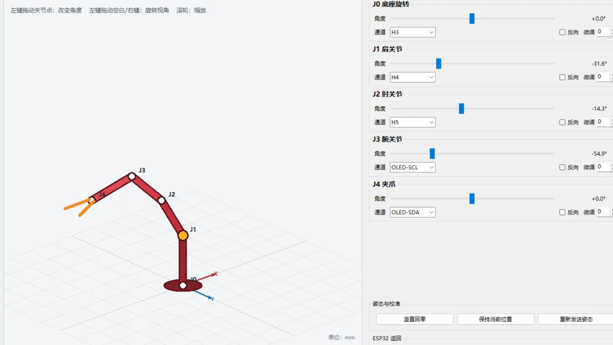

返回硬件项目索引
返回硬件项目索引收纳机械臂
阅读项目文档 ↓我设计并制作了一台用于游戏手柄收纳的机械臂，独立完成了机械结构设计、电路板绘制及控制软件开发。
为了让机械臂能够折叠收纳，我用一周时间设计和调整机械结构。电路部分是最具挑战的环节：我使用一块8.4V航模电池统一供电，并自行设计降压电路，满足舵机的8.4V和ESP32的5V供电需求。初期因电路连接设计不当，先后损坏了三块ESP32，经过反复排查与修改，最终实现了稳定供电。
控制方面，我通过蓝牙实现机械臂与电脑联动，可在打开Steam等特定操作触发后，自动送出或收回手柄。同时，我开发了带有3D视图的上位机软件，支持在三维空间中直观编辑机械臂动作。这次项目让我完整经历了从结构、电路到软硬件联调的过程，也加深了我对机电系统设计的理解。


项目文档
项目说明书
项目说明书
项目简介（型号选择、功能介绍等）
这是一个机械臂，具有5个自由度，可以实现抓取的基本功能。
关于型号，这里我主要采用舵机作为动力装置，而不是步进电机，而在机械爪的处理上，采用软体结构作为手指，通过机械结构实现手指的收拢。
功能方面，现在这个机械臂是作为我桌上的手柄架使用，能够在我需要的时候自动伸出来将手柄递给我，结束时可以收拢。
项目成长（模块介绍、迭代与调试等）
主板上最初有六个模块，分别是按钮，oled，陀螺仪，步进电机，舵机，电池与降压。按钮负责手动调节状态，oled交互，陀螺仪便于自动调参，步进电机和舵机负责驱动。
第一次变革是因为我开始设计时采用两个电池分别给步进电机，舵机供电，电压分别15v，8v，而8v又经过降压到5v，再给esp及oled等供电.开始测试时降压模块有效果，但是接上15v后，调试步进电机时，因为我个人操作失误，加上通孔设计不合理，导致主板烧毁带走了我的第一块esp。
所以第二次，我只调节了通孔的数量，但是我还是没有变更电压，依旧时15v，8v供电，但是，这一次发现我的步进电机和舵机的调试过程混淆了，舵机体型小，不需要外置的驱动模块，而步进电机需要。所以，这一次我再次更换主板，将步进电机的驱动模块也集成在主板上。
第三次，依旧是驱动模块的问题，这一次是商家的问题，睁着眼睛说瞎话，导致我电路板画错，成功让我在测试过程中烧坏我的第二块esp。
第四次，经过和学长之间的交流，我放弃了将15v集成到电路板的想法，因此，我放弃了使用步进电机作为驱动模式。全部采用舵机。我通过改造杜邦线，成功将oled的两个通讯线路改装成IIC孔，用以连接两个新的舵机，成功在原先的主板上实现机械臂的自由运作。
后面则是设计上位机及程序，我做了一个3D的调节程序，可以直接调节角度。
当然，最初的机械臂是固定在电瓶车上供我撑伞的，但是一方面交通规则不允许，另外一方面电瓶车无法通过抱箍结构固定我的相当重量的结构，所以最终决定放到桌上作为我的手柄架。
AI使用情况说明（项目内容中的）
AI主要是两方面的运用：
一是作为电路板绘制时的参考，帮我选择电子元器件。
二是程序设计，帮我做上位机。
心得
一是不要在一块版上集成所有，这是三块烧掉得esp告诉我的，如果需要，要用两块板走。
二是机械结构上，设计的厚度要合理，不然极有可能断裂。